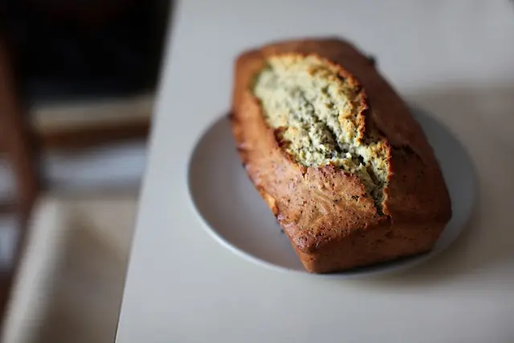

Banana Bread
Description
Why compromise the banana flavor? This banana bread is moist and delicious with loads of banana flavor! Friends and family love my recipe and say it's by far the best! It's wonderful toasted!! Enjoy!
Ingredients
- 100ml olive oil
- 2 eggs
- 3 bananas
- 75g brown sugar
- 75g white sugar
- 225g flour
- 1 tsp baking powder
- 1/2 tsp baking soda
- 1 tsp cinnamon
- 100g nuts
Steps
- Crush ripe bananas (with a fork for example)
- Mix oil, white sugar, brown sugar and eggs
- Add the banana to the mixture and mix again
- Add flour, cinnamon, baking powder and baking soda to the mixture from the previous step
- Mix everything again
- Chop walnuts and add to the mixture.
- Use a rectangular mold, grease it with oil or butter and pour the batter into it.
- Bake 40min at 180°C
- Let it cool for a while